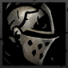
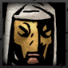

Arbalest: A back line damage dealer with some party support.
Arbalest: A back line damage dealer with some party support. Bounty Hunter: A no nonsense, frontline damage dealer with offensive support.
Bounty Hunter: A no nonsense, frontline damage dealer with offensive support. Crusader: A holy warrior to smite the undead and heal his allies.
 Grave Robber: A quick and dirty woman, not afraid to use thrown weapons or poisons.
Grave Robber: A quick and dirty woman, not afraid to use thrown weapons or poisons. Hellion: One word. Barbarian.
Hellion: One word. Barbarian. Highwayman: A scoundrel at home with his trusty pistol and knife. Watch your back.
Highwayman: A scoundrel at home with his trusty pistol and knife. Watch your back. Houndmaster: A man with a dog and a club. The dog is scarier.
Houndmaster: A man with a dog and a club. The dog is scarier. Jester: You know Kefka? No magic, more blood, and a lute.
Jester: You know Kefka? No magic, more blood, and a lute. Leper: A poet who can barely see out from his mask, but deadly if he connects.
 Man at Arms: A trusty soul, capable of defending his own with himself and support.
Man at Arms: A trusty soul, capable of defending his own with himself and support. Occultist: Master of the Eldritch, keeper of secrets.
Occultist: Master of the Eldritch, keeper of secrets. Plague Doctor: With knowledge of alchemy and disease in plenty, a force to be reckoned with.
Plague Doctor: With knowledge of alchemy and disease in plenty, a force to be reckoned with. Vestal: Because "Priestess" takes too long to say.
Vestal: Because "Priestess" takes too long to say.